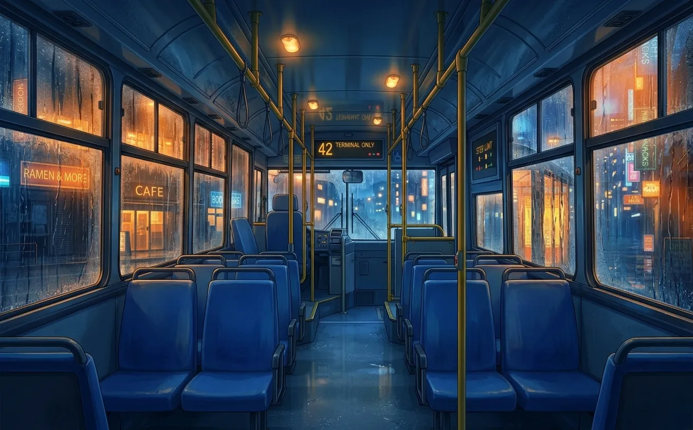
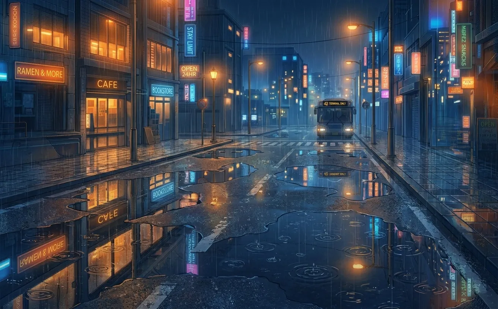
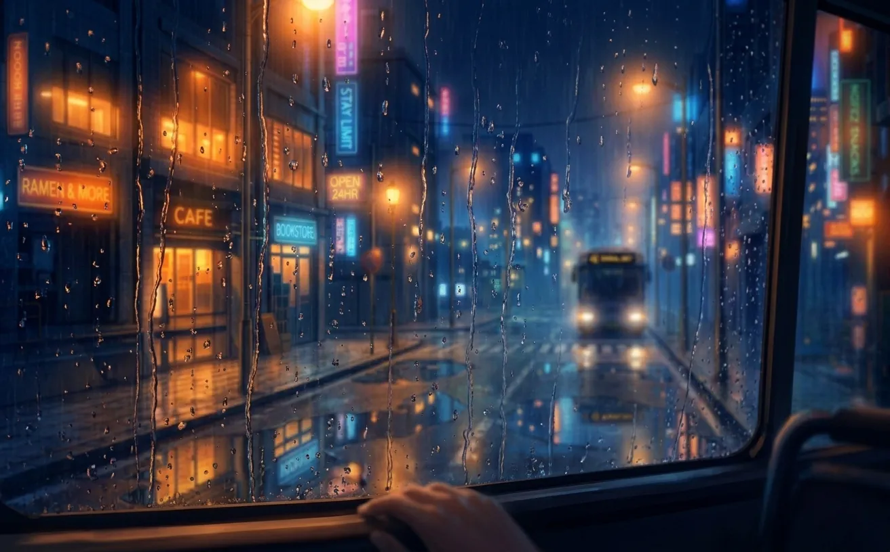
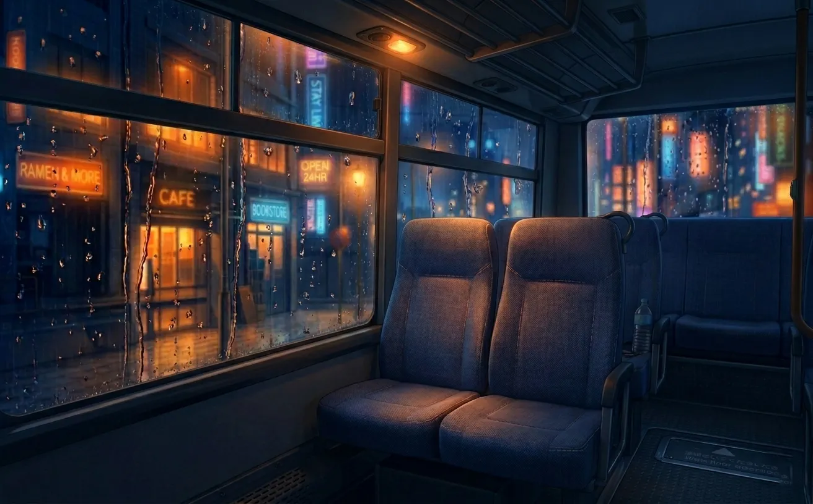
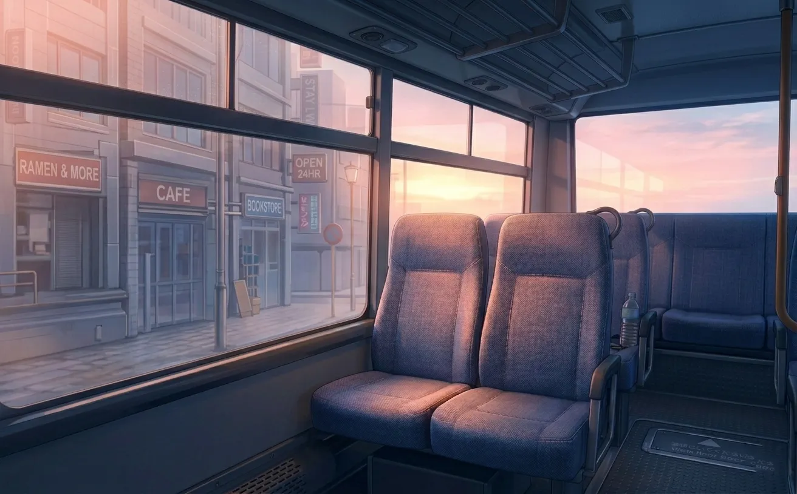

two strangers. rain on the windows. and a conversation that never happened.
the bus came at 11:47.
it was always late. by three minutes, sometimes by ten. tonight it was seven. i counted. there was nothing else to do.
the rain hadn't stopped for three days. the windows fogged as soon as i stepped inside. i tapped my card. walked to the back. sat down. looked out into the blur of streetlights and nothing.
there were two other people on the bus. the driver, who listened to talk radio at a volume that seemed illegal. and him.
he sat in the last row. by the window. i couldn't see his face. just the back of his head. silver-white hair, catching the light every time we passed a lamp.
i didn't think much of it. not then.

the first time he spoke was on a thursday.
i didn't know it was thursday until i checked my phone. the days blurred together when you worked late every night.
"you take this bus every day."
his voice was quiet. not shy. just... quiet. like he wasn't used to using it.
i turned around. looked at him. silver-white hair. pale blue eyes. something about them reminded me of winter mornings. the kind where the frost hasn't melted yet.
"yeah," i said. "work."
"you don't like it."
it wasn't a question.
"does anyone like their job?"
he didn't answer. just looked at me. like he was trying to remember something.
"i didn't mean to bother you," he said. "i just... noticed."
"noticed what?"
"that you always sit in the same seat. that you never listen to music. that you stare out the window like you're looking for something."
i didn't know what to say. so i said nothing.
the bus stopped. my stop. i stood up. walked to the door. didn't look back.

the next night, he was there again.
same seat. same quiet presence. when i sat down, i could feel him looking at me. not staring. just... present.
i didn't turn around. didn't say anything. neither did he.
this became our ritual. silence, broken only by the rain and the driver's radio. three stops. twelve minutes. every night.
i started to look forward to it. the bus. the quiet. the stranger who noticed things about me that i hadn't noticed about myself.
i didn't even know his name.
it was two weeks before he spoke again.
"you were late tonight."
i turned. he was looking out the window now. his reflection on the glass was faint. ghostlike.
"i missed the first bus."
"you ran."
"how do you know?"
"your hair is wet."
i touched my hair. it was. "i didn't bring an umbrella."
"you never do."
i laughed. a small sound. it surprised me.
"you notice a lot," i said.
"i have time."
"what do you do?"
he was quiet for a moment. "i wait."
"wait for what?"
"i'll know when i find it."
that should have sounded strange. it didn't.

after that, we talked.
not much. not about anything important. the weather. the city. the way the light changed when the bus turned a corner.
he told me he liked the night. i asked why. he said because it was quiet. because people stopped pretending. because when it was dark, you could almost believe you were the only one left.
"is that sad?" he asked.
"i don't know. is it?"
"maybe. maybe not."
"which one do you want it to be?"
he looked at me. really looked. like he was seeing something he'd been searching for.
"i want it to be not sad."
"then it's not."
he smiled. small. barely there. it was the first time i'd seen him smile.
i decided i wanted to see it again.
i started taking the bus earlier.
just by a few minutes. enough to sit closer. not next to him — that would have been too much. but close enough that i didn't have to turn around to see him.
he noticed. of course he noticed.
"you moved."
"my old seat was cold."
he didn't believe me. i could tell. but he didn't say anything.
we talked about other things. where he grew up. (he didn't say.) how long he'd been in the city. (too long.) what he was looking for. (still didn't know.)
i told him about my job. about the long hours. about the feeling that i was waiting for something too, even if i didn't know what.
"maybe that's why you're here," he said.
"on this bus?"
"in this city."
i thought about it. "maybe."

one night, he wasn't there.
i waited. the bus came. i got on. the last row was empty.
i sat in my usual seat. stared out the window. the rain was heavier than usual. the streetlights blurred into nothing.
i got off at my stop. walked home. didn't sleep.
the next night, he was back.
"i thought you weren't coming," i said.
"i almost didn't."
"why?"
he didn't answer. just looked at me with those pale blue eyes. sad. hopeful. both.
"i didn't want to be a ghost," he said.
"you're not."
"you don't know that."
"you're sitting here. you're talking to me. ghosts don't do that."
he looked down at his hands. "maybe they do. maybe you just can't tell."
i didn't know what to say to that. so i didn't say anything. i just sat there. with him. until the bus stopped.
spring came. the rain stopped.
the windows didn't fog anymore. i could see the city clearly. the buildings. the trees. the people.
he was still there.
"it's almost summer," i said.
"i know."
"do you take this bus in the summer?"
he was quiet. "i don't know."
"what do you mean you don't know?"
"i mean i don't know if i'll be here."
my chest tightened. "where will you go?"
"i don't know that either."
i wanted to ask more. to demand answers. but something in his voice told me he didn't have them. not for me. not for himself.
so i did the only thing i could. i asked the question i'd been avoiding for months.
"what's your name?"
he looked at me. held my gaze. "xavier."
"xavier," i repeated. the name felt familiar. like i'd said it before. in another life. in a dream.
"yours?" he asked.
i told him.
he smiled. that small smile. the one i'd been waiting to see again.
"i've been waiting for you," he said.
"for how long?"
"longer than you know."

i still take the bus.
not every night. not anymore. but sometimes, when the city is quiet and the rain is falling, i walk to the stop. i get on. i sit in my seat.
sometimes he's there. sometimes he isn't.
i've stopped asking why.
some things don't need explanations. some things just... are.
like the bus. like the rain. like the way he looks at me when he thinks i'm not watching.
like the words he never says.
i think that's what love is. not the grand gestures. not the confessions. just... showing up. night after night. sitting in the same seat. waiting for someone you can't explain why you're waiting for.
the last bus leaves at 11:47. it's always late.
i don't mind anymore.